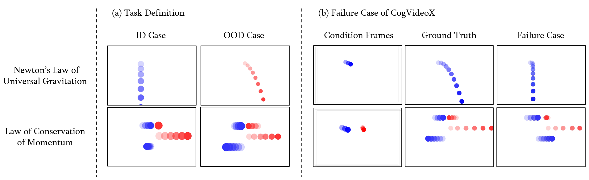

Physics-AdaNet: Learning Physical Laws via Adaptive Architecture Alignment across Diverse Scenarios
Abstract
Recent advances in video generation aim to produce physically realistic content. However, existing methods often fail to maintain physical consistency under Out-of-Distribution (OOD) environmental changes. Motivated by the observation, we study the task of OOD generalization of physical laws in video generation, where a model must infer physically plausible motion in unseen environments by recomposing invariant physical laws from previously observed motion primitives, rather than extrapolating memorized visual patterns or numerical parameters. This setting poses two key challenges: extracting transferable physical structures from high-dimensional visual observations and adapting the alignment mechanism to diverse physical environments. To address these challenges, we propose Physics-AdaNet. Specifically, our approach employs Adaptive Physics Alignment (AdaAlign), which bridges the gap between latent representations and physical priors via temporal masking, fostering structural physical understanding rather than relying on statistical patterns. Meanwhile, to accommodate diverse physical environments, we incorporate Neural Architecture Search (NAS) to adaptively tune the alignment architecture for each scenario, further enhancing generalization capacity. Experiments on two benchmark tasks with structural OOD shifts demonstrate that Physics-AdaNet achieves the best kinematic accuracy across all OOD scenes, where the invariant governing law must be re-composed rather than recalled, while remaining competitive with state-of-the-art baselines on In-Distribution (ID) scenes and standard visual-fidelity metrics. More visualization results, frame-level qualitative results on real-world footage, and video demonstrations are provided in the appendix and on our project website at https://physicsadanet.github.io/Physics-AdaNet/.

Overview of Physics-AdaNet. Our framework primarily consists of: (a) Adaptive Physics Alignment, which enforces physical consistency by aligning the intermediate features of the backbone with extracted physical priors from ground truth across both spatiotemporal dimensions to enhance OOD generalization; and (b) NAS-based Adaptive Projector, which employs an evolutionary algorithm to dynamically identify the scenario-dependent optimal projector configuration to activate the weights and operators along a specific path for specific scenarios.
